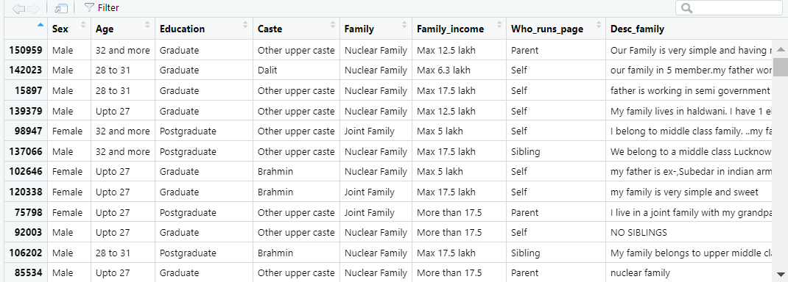
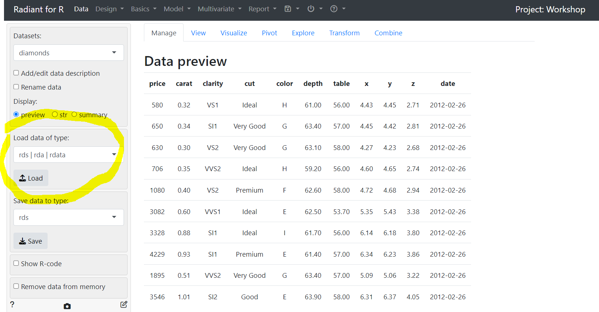
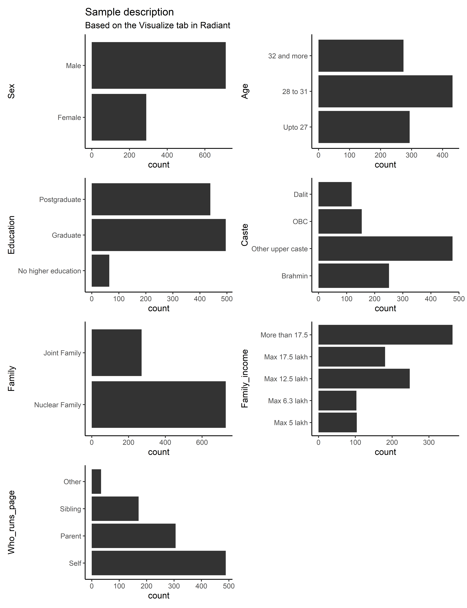
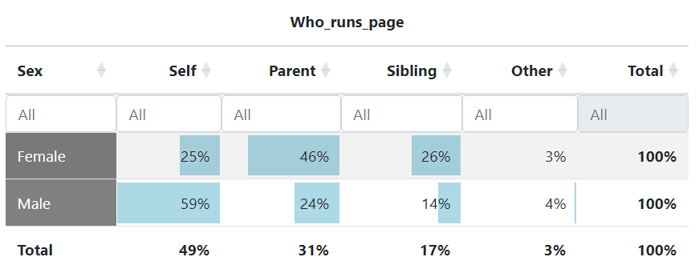
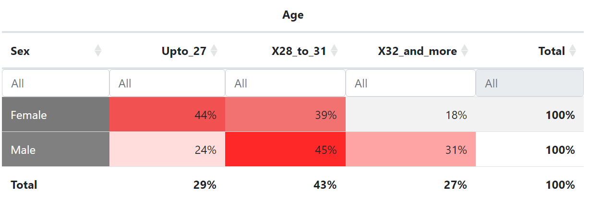
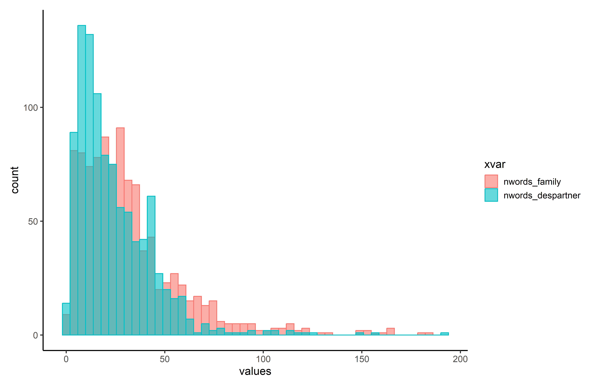
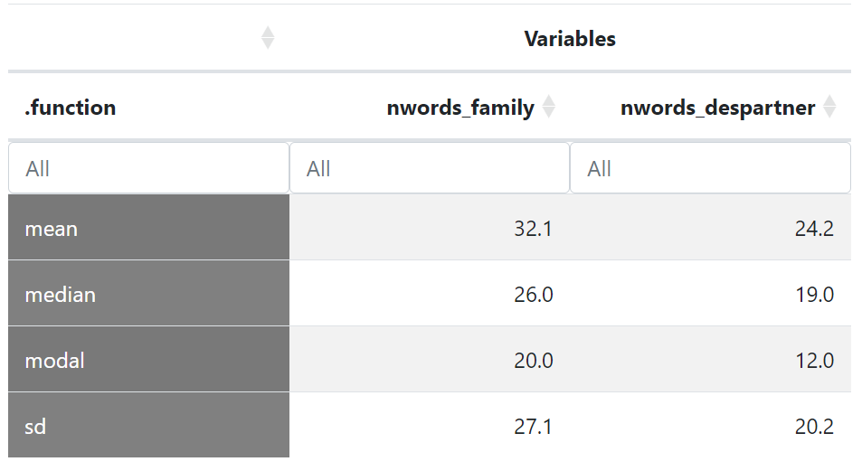
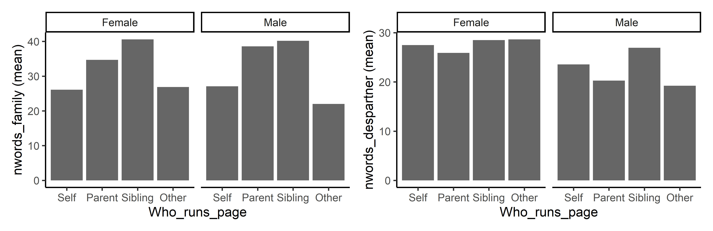

##For this workshop, we will need the following packages that you first need to install by running these commands:
install.packages("dplyr",repos = "http://cran.us.r-project.org") #for data management if needed
install.packages("radiant",repos = "http://cran.us.r-project.org") #for descriptive statistics
install.packages("quanteda", repos = "http://cran.us.r-project.org") #for textual data pre-treatment and basic analysis
install.packages("quanteda.textstats",repos = "http://cran.us.r-project.org")
install.packages("quanteda.textstats",repos = "http://cran.us.r-project.org")
install.packages("rainette",repos = "http://cran.us.r-project.org") #for exploratory textual analysisDiscovering the data
Preparation of the analysis
In this tutorial, we are first going to prepare R for the upcoming statistical analysis by downloading and loading necessary R packages into our environment. Packages are collections of functions that allow to use different statistical tools depending on your needs.
Here, I am requesting you to download six packages. “dplyr” is a useful data management package, “radiant” opens a “shiny app” that allows to run statistical analyses without coding, “quanteda” and its two dependencies “quanteda.textstats” and “quanteda.textstats” are used for pre-treating text as data (it also contains a lot of textual analysis tools which we are not using here) and finally “rainette” is a “shiny app” to conduct exploratory textual analysis using the Reinert’s method.
To run the above R code lines, highlight them with your mouse cursor and then click on “run” (or type ctrl+Enter on the keyboard). There should be a lot of red lines appearing on the console but after a while this should stop and you should be fine…
Then you can just load these packages into your R environment by running the below lines.
##Then we can just load the packages
library(dplyr)
library(radiant)
library(quanteda)
library(quanteda.textstats)
library(quanteda.textplots)
library(rainette)After that, we are going to load the database. If you are on the Posit server, you can just run the below lines to load the “sample.rdata” into your environment.
setwd("/cloud/project")
load("sample.rdata")Inspecting the data
You can have a look at the data by running the following code:
View(sample)
The data contains 1,000 rows (1,000 matrimonial advertisements) and 11 columns (11 variables, corresponding to 11 different types of information collected from the matrimonial advertisement).
This database is an excerpt from the web-harvested matrimonial advertisement profiles that we collected for the “Matchmaking digitized” paper. If you remember, we harvested all Hindu male and female profiles based in Uttar Pradesh. Here we randomly selected 1,000 profiles from this list by adding the following condition: no missing variable on the selected 11 types of information. Missing information is an important feature is web-harvested profiles on network platforms as we talked about in the lecture. For simplicity, we do not engage here on this issue.
Now, let’s inspect the data more closely by using the radiant shiny app.
radiant::radiant_window()You should see something like the picture below appearing. You again need to load the “sample.rdata” database by clicking on “Load” as indicated on the picture.

This gives you another preview of the database.
Exploring categorical variables
Let’s have a more detailed description of the database. Of the 11 variables,
7 are “factor” variables, i.e. they are categorical variables
Sex: corresponding to the gender of the spouse-to-be
Age: corresponding to the age of the spouse-to-be
Education: highest degree of the spouse-to-be
Caste: declared caste recoded as Brahmin, other upper caste, OBC, Dalit
Family_income: declared total family income
Family: family type (joint or nuclear)
Who_runs_page: manager of the advertisement profile (Self if spouse-to-be, parent, sibling or other, including matrimonial agency)
Note that all these variables have already been cleaned and recoded from the matrimonial advertisements (see the slides of the lecture where an example of a profile is provided).
We use the “Visualize” tab to have a quick plot describing our dataset based on these features. Play around the features of the tab to get a “nice” figure! Below is a suggestion.
Thanks to this, we are to see in a snapshot that we have much more male rather than female advertisement profiles, that the modal age category is 28 to 31, most of the profiles are at least graduate, upper caste, come from nuclear-type families which earn more than 17.5 lakh a year. Quite a selected sample compared to the Hindu population in Uttar Pradesh! Finally, though about half of the advertisements are managed by the spouse-to-be themselves, parents and siblings are also often involved.

Who runs the page is very much associated to the gender of the spouse-to-be. We can use the “Pivot” tab to create a cross-table with row percentages (gender is the “independent” variable and is represented in the rows and profile management is the column variable as it is here the “dependent” variable):

We can do other explorations. For instance, does age vary depending on gender? As can be seen below, women tend to be on the whole younger than men on this matrimonial advertisement platform, possibly reflecting gender-specific age norms in marriage practices.

Exploring numeric variables
The 8th and 9th variables, called Desc_family and Desc_desiredpartner consists in “character” variable, i.e. they consist in text strings on the matrimonial ads where the family of the spouse-to-be is described and where the characteristics of the desired partner are indicated. We will look more closely on how to analyse these textual variables in the next session so we skip them for now.
The last two variables of the dataframe are nwords_family and nwords_despartner. I created “numeric” variables where I counted the number of words used to describe one’s family and one’s desired partner for each matrimonial advertisement.
Let’s have a look at how these data looks like, first from the “Visualization” tab.
The histograms of the distributions for these two distributions suggest that we have two “skewed” distributions: most of the people write less than 50 words, but a few seem to write longer descriptions, so that the “tail” of the distribution expands a lot on the right.
Notice also how the mode for desired partner is at a lower value, suggesting that matrimonial advertisements write more on who their family are, rather than what kind of partner they are aspiring to…

You can go to the “Explore” and analyse univariate descriptive statistics for these two numeric variables. Indeed, the mean, median and mode indicate that there is more written on family than desired partners on matrimonial advertisements!
The gap between the mean and the median points to the asymmetry of the distributions that we already identified in the histogram plot (regarding family and family description, as a “centrality” indicator, the mean is higher than the median because it is an indicator that is sensitive to outliers, and here the outliers are those who write a lot!)
SD here means “standard deviation” and it is an indicator of the dispersion of the distributions. As the standard deviation of the number of words to describe one’s family is higher than for the desired partner, it suggests a higher dispersion of the length of family descriptions (there are both very short and very long family descriptions whereas for the desired partner descriptions, it is more centered). This idea is also quite well visualized on the preceding figure.

We can also explore whether the length of the family and desired partner descriptions vary according to the gender of the spouse-to-be and to who manages the advertisement profile.
We can do this exploration in the “Explore” tab to obtain tables or in the “Visualize” tab to obtain nice plots. Here, we clearly see that the length of the family description clearly depends on who manages the profile: when it is a parent or a sibling, it is on average longer than when the profile is managed by the spouse-to-be.
Regarding the length of descriptions of the desired partner, they are on average slightly for female profiles (aspiring a male partner) than the reverse. Variations depending on who manages the profile seem less salient.

Can you think of other factors that may affect how much people write about their family and about their desired partner? Education, socioeconomic level, age… try to think about mechanisms, and explore them with the data!
To conclude
In this tutorial, we have explored our sample database of matrimonial advertisements. In so doing, we have described different types of variables (categorical and numerical) and how we can use cross-tables to analyse how one variable is associated to the other. Plots are a nice way to convey information.
Radiant is a relatively easy app to handle and explore data.
Note that we have not entered the fascinating worlds of inferential statistics (statistical tests) and multivariate analysis (regressions) here but the app offers these possibilities. Feel free to explore the many possible analyses!